30.10.2005
Roma
Fake, Via di Monte Testaccio
Fake, Via di Monte Testaccio
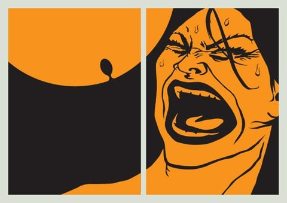
Genuine
Roman Art
Collettivo di grafica, illustrazione e design nato a Roma nel 2005. Mostre a tema, giochi a distanza, progetti editoriali e un tour di grafica internazionale, fino al 2010.
Mostre, progetti e collaborazioni anno per anno, con le opere, gli artisti, i luoghi e la rassegna stampa.
Il 30 ottobre, al Fake di Testaccio, apre Tema/Colore: a ogni uscita un tema e un colore, su cui lavorano tutti gli artisti invitati. A dicembre la seconda, Musica / Blu.

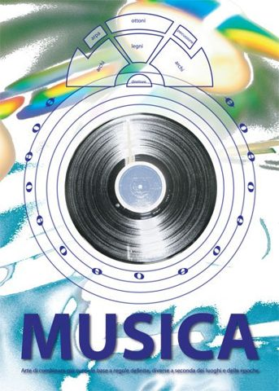
Cinque uscite di Tema/Colore, dal giallo del cibo al bianco e nero del dualismo, tra Caffè Letterario, Linux Club, La Palma ed Extra Gallery. La serie si chiude a ottobre con la settima uscita. Prima edizione di MArteLive e partecipazione a Sushi for Beginners all’Abitart Hotel.
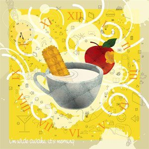
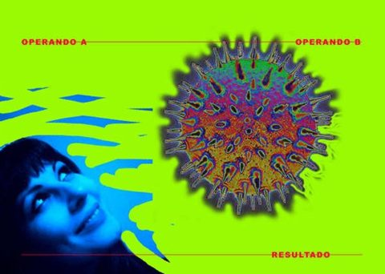
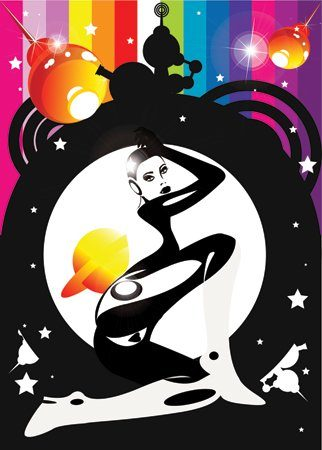
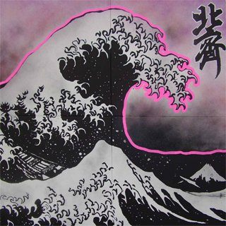
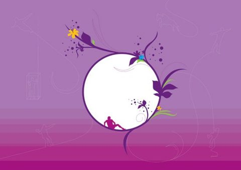
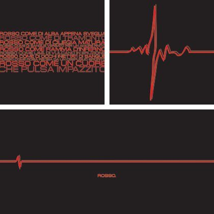
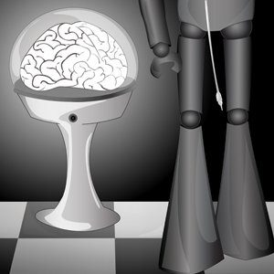
Finito Tema/Colore, parte /RM: ogni mese al Rialto Santambrogio artisti che raccontano Roma, trenta in tutto. Parte anche Pong: due artisti, un solo file, a turni, per dodici partite online. Personal Post espone lettere disegnate al Circolo degli Artisti. GRA è a Tokyo come espositore al Design Festa e partecipa a The T-Show con Mezzaparola. A fine novembre il workshop di tipografia FFtypoEXPERIENCE per FF3300; a dicembre il primo volo di Nation, una mostra per paese: l’Inghilterra.
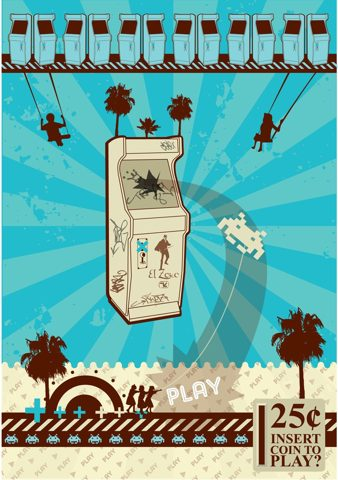
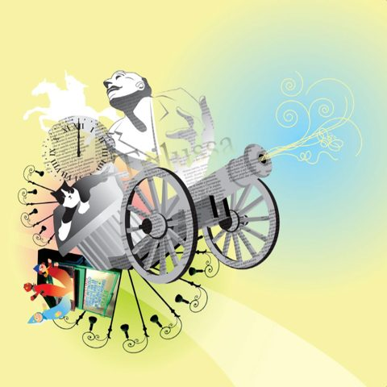
Il Giappone nell’immaginario italiano
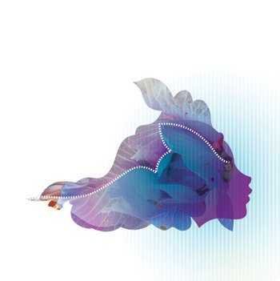
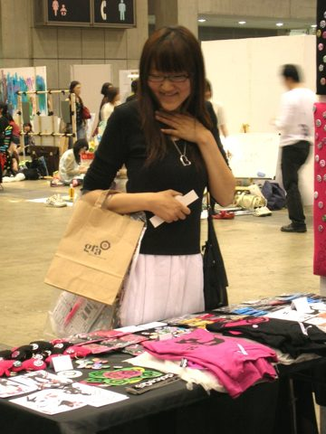
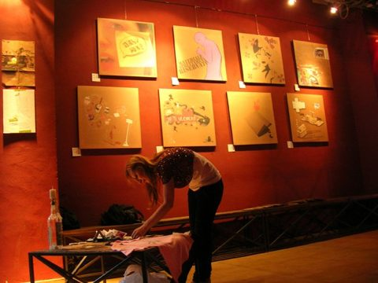
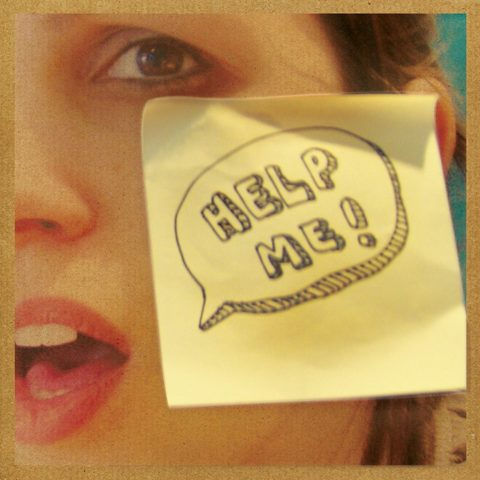
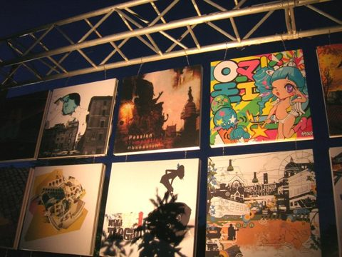
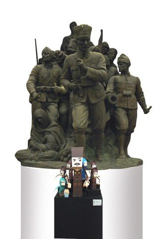
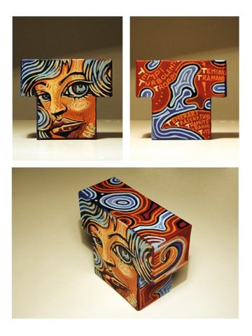
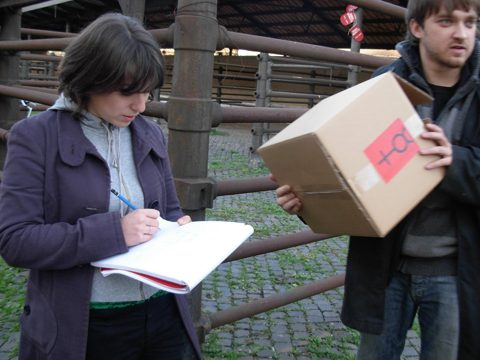
Huragano: primo party italiano dedicato ai designer toy, 20 Whalenas customizzate
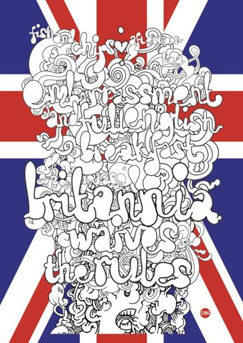
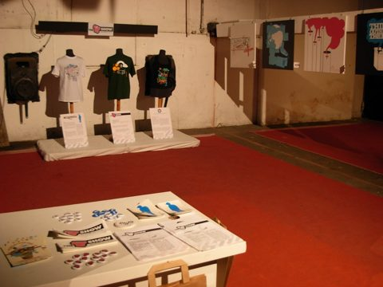
Nation prosegue con Spagna e Germania e porta Inghilterra e Spagna al Plantazero di Barcellona. In autunno BITE, assaggi di design ispirati a Giappone, India, Kenya e Messico, è in 15 negozi di 10 città italiane. A Prato la Graphic Revolution Army tiene un workshop di paper toys al Freeshout. Iniziano le copertine Fronte/Retro per Busta.
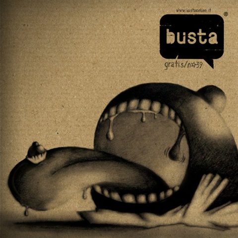
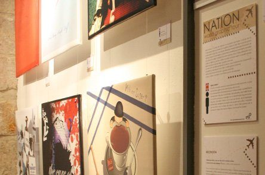
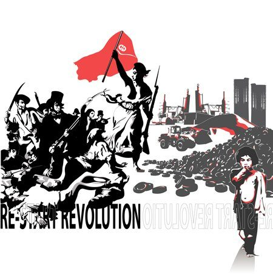
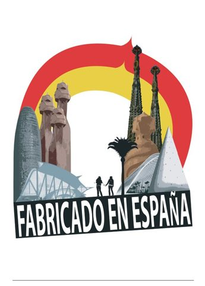
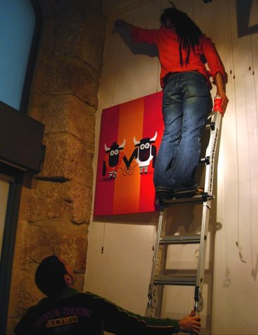
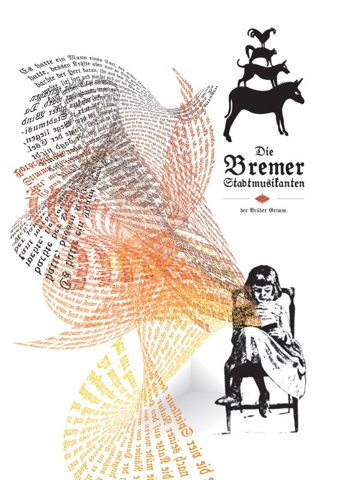
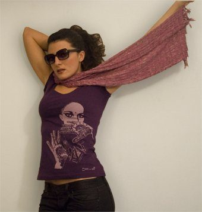
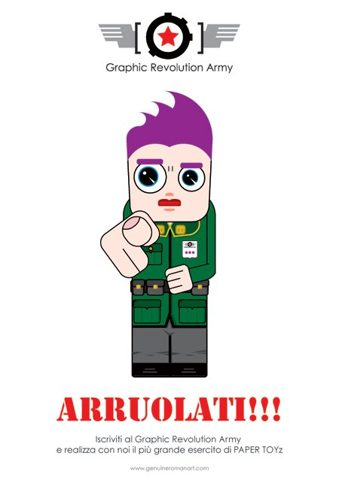
Romania e Svezia, quarto e quinto volo di Nation, non hanno una serata propria: le loro opere arrivano direttamente alla European Session. Il 27 novembre, alle Officine Farneto, la mostra riunisce oltre cento opere su canvas in un allestimento da aeroporto. MArteLive sceglie come tema i confini.
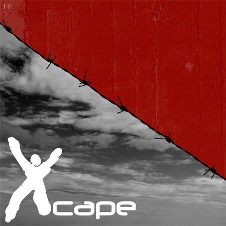
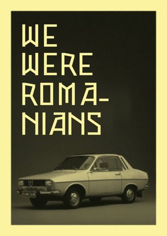
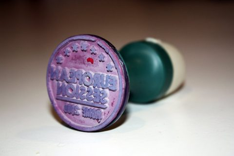
Nation si chiude con l’Italia, in una galleria online. A Roma GRA partecipa a MemoRising con opere in formato post-it e, per Smart, a Previsioni Metropolitane: la città del futuro raccontata in istogrammi.
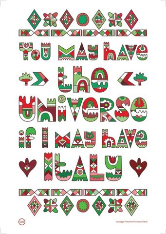
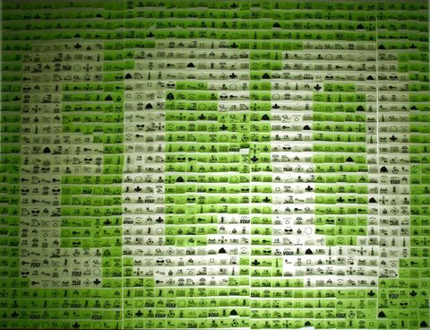
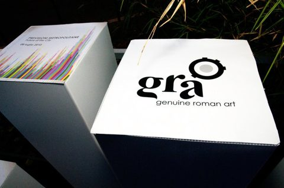
26 luoghi · Roma, Barcellona, Prato, Tokyo
14 uscite · 2006 — 2011
Dalla free press romana a la Repubblica e Progetto Grafico.
«Work Lab Crew – Genuine Roman Art» →
Il mezzo: grafica digitale, installazioni, video; la rete come spazio permanente
«Amatriciana, arte e musica: le insolite frontiere creative dei giovani romani» →
Quattro grafici “classe ’80” e un’intervista
La collettiva Sushi for Beginners all’Abitart Hotel
La grafica rilanciata come movimento artistico
Il risveglio della scena romana
La serata GRA alla Nu Factory
«Alla ricerca della grafica italiana» →
GRA come catalizzatore di una nuova generazione
Intervista: luoghi trasversali, grafica non di nicchia
Oltre cultura alta e bassa
«Giovani, le nuove factory sul web» →
I collettivi creativi nati online
Il progetto Pong
Presentazione del gruppo, in inglese
Scheda sul portale romaprovinciacreativa.it
«Roma creativa anche sul web» →
Il portale provinciale della creatività
Senza data